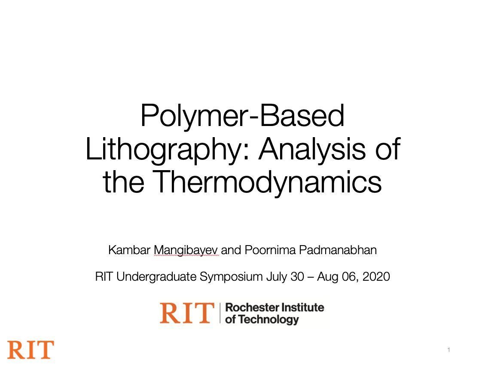
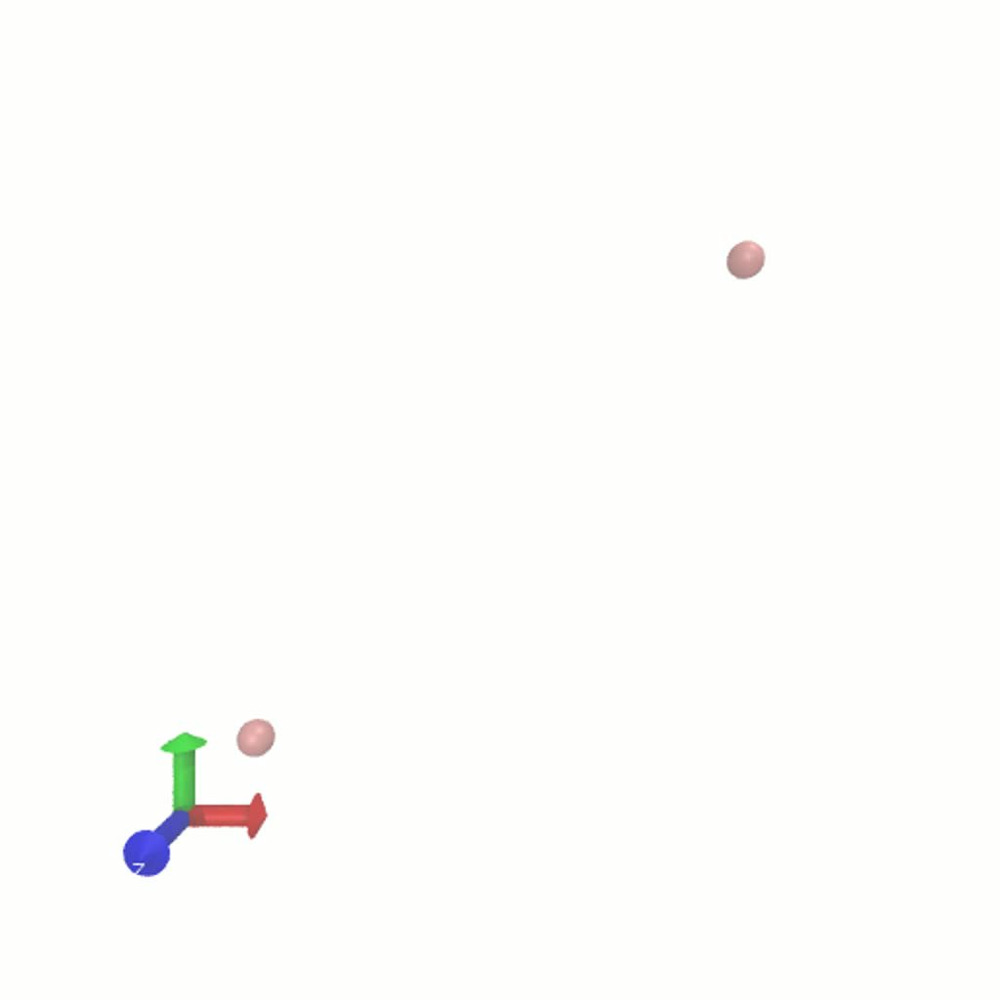

Polymer Lithography Simulation
Block copolymers, phase separation, and the bridge between simulation and experiment.
A polymer is a macromolecule in which many groups of atoms — monomers — are bonded into a long chain. The molecules adopt a structure that's similar to a bowl of spaghetti: interconnected, disordered chains looping through each other. Thanks to advances in chemistry, we can control atomic bonding within each molecule precisely.

Why this matters for lithography
We can tailor these materials to perform lithography. The principle is simple: much like water and oil form distinct regions in a container, water-like and oil-like macromolecules can be joined together to form a block copolymer (water-like in blue, oil-like in red). Place many of these molecules together and they first adopt a spaghetti-like structure, but because the red and blue types repel, they transform until the molecules align and create a pattern. Zoom out and you see layers of red and blue forming a stripe pattern. Depending on the ratio of red-to-blue and the chemistry of the molecules, you can form a wide variety of extremely thin shapes — circular holes, spheres, stripes, lamellae. Those shapes are then used in lithography.
Why simulate instead of experiment
The shape and behaviour of polymers depends on many conditions — temperature, chemistry (repulsion strength), atom sizes — and each parameter affects the structure in a chaotic way, so we don't know in advance what structure a given molecule will form. We don't have a starting point for experiments, and it'd be too wasteful to run a bunch of them with no clear goal. Instead, we run thousands of simulations to get a general sense of polymer structure under different conditions. Simulations take less time to conduct and analyse, so we get a general understanding much faster — and the results tell us where to start the experiments and which ones to actually run. It's also much cheaper than the lab. With no starting point, it took us at least 50 simulations to narrow the scope down to specific conditions where we could observe phase-separation behaviour. Even 50 experiments is too expensive and inefficient. (Side note: COVID-19 also kept us out of the labs, but it wasn't the deciding factor.)

Modelling — Molecular Dynamics, in 100 lines of code
All particles obey Newton's laws of motion. For hard spheres, they collide elastically, conserving momentum and kinetic energy. Extend that to hundreds or millions of particles, and you can simulate atoms — modified with small forces based on the chemistry, using the so-called Weeks–Chandler–Andersen (WCA) potential. WCA depends on the size and distance between particles: steep repulsion within a critical distance, flat potential beyond it (no attraction). The whole thing fits in about 100 lines of code. The energetic parameter ε quantifies how repulsive the particles are, and depends on the chemistry of the atoms. MATLAB is too slow for these simulations, so we used LAMMPS — and submitted to the RIT cluster, which finishes a dozen simulations in hours instead of ages.

Findings
Holding the model constant and varying temperature: at T = 2.0 the structure is fairly ordered with clear signs of phase separation (max volume fraction ≈ 0.8). At T = 5.0, no phase separation is observed and atoms spread randomly. So as temperature increases, χ decreases.
Holding everything constant and varying ε at T = 2.0: at ε = 2.0, no phase separation, atoms randomly spread (max volume fraction ≈ 0.55, low χ). At ε = 3.5, clear phase separation. So as ε increases, atoms phase-separate more — χ increases with ε.
Plot α and β against ε across runs and fit lines: blue (α) → y = 0.3792x − 0.8038; orange (β) ≈ 2. Plug it back in: χ is inversely proportional to temperature and directly proportional to interaction strength.
What we did with that
Our coefficients aren't exact, but the goal was a general sense — enough to proceed to experiments and get factual, physical data that benefits microfabrication. We built a bridge between the experimental and simulation worlds: identify the differences, improve the simulations to be more realistic, and vice-versa. Overall, we hit the goal: find the correlation between effective repulsion and variable initial conditions to improve the general understanding of polymers and their behaviour.
Acknowledgements
Dr. Poornima Padmanabhan — for guiding and teaching me throughout the research. RIT Honors Program — for the opportunity. Research Computing — for the computational resources.